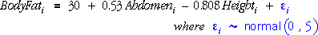

If the error variance was known
The three parameter estimates have normal distributions,
If the value of the error standard deviation, σ, was known, a 95% confidence interval for each parameter would be 1.96 standard deviations on each side of the estimate. For example, a 95% CI for β1 could be evaluated as:
Using an estimate of the error variance
In practice, σ2 is rarely a known value, so it must be replaced by an estimate,

To take account of the additional uncertainty caused by this estimate, the constant 1.96 must also be replaced by a larger value that is obtained from t-tables with (n - 3) degrees of freedom. For example,
Properties
As with all earlier confidence intervals, there is a 95% chance that the 95% confidence interval will include the true parameter value.
There is a 5% chance that the confidence interval will not include the true parameter value.
Simulation
The diagram below generates random responses from the model

The diagram initially shows the 95% CI for the slope parameter associated with Abdomen.
Click Accumulate then take several samples to see the variability of these confidence intervals and observe that about 95% of them do include the true parameter (0.53).
Use the pop-up menu to repeat this exercise for the other two parameters of the model.
Calculating the confidence intervals
We have not given full formulae for the confidence intervals, only an indication of how they are calculated — we have not given enough detail for you to find the confidence intervals by hand.
In practice, statistical software should always be used to fit linear models and to evaluate confidence intervals.